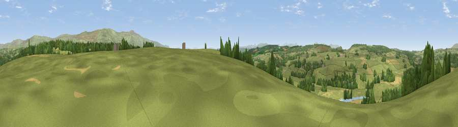

Viewpoint near Little Salkeld
#15370 in England · top 61% of its area beats it · near Little SalkeldWhere it is
The exact computed spot (NY 56525 37425). Click the marker for map links.
The view, rendered

A 360° render of this exact spot computed from the terrain model, tree cover and land cover — summer colours, afternoon light, calibrated against photographs of famous viewpoints. Real trees, hedges and buildings will differ in detail.
The panorama
Grey silhouette: terrain skyline in each direction (720 bearings, Earth curvature and refraction included). Dashed green: skyline with trees (+15 m) and buildings (+8 m) as obstacles. Blue strip: how far the ground is visible on each bearing.
Where the view opens
Wedge length = distance to the farthest visible ground on that bearing (vegetation-aware). Rings at 10, 25 and 50 km.
What fills the view
72% grassland · 15% woodland · 11% cropland · 1% water ·
Angular shares of the visible panorama (visual magnitude), not map area. Landscape diversity 0.38 (0–1 Shannon).
Key numbers
More beautiful places nearby
The staircase of upgrades: each row has a higher view potential than everything closer. Driving times are estimates from straight-line distance, calibrated against real road routing — check an actual route before setting out.
| Place | Direction | Drive | Score |
|---|---|---|---|
| Viewpoint near Little Salkeld | S · 1 km | ~2 min | 61.3 |
| Viewpoint near Plumpton | WNW · 5 km | ~11 min | 68.0 |
| Viewpoint near Plumpton | WNW · 5 km | ~12 min | 68.9 |
| Viewpoint near Plumpton | WSW · 6 km | ~12 min | 78.9 |
| Barrock Fell | NW · 14 km | ~25 min | 81.1 |
| Viewpoint near Watermillock | SSW · 19 km | ~33 min | 82.6 |
| Viewpoint near Watermillock | SSW · 20 km | ~33 min | 83.5 |
| Viewpoint near Legburthwaite | SW · 32 km | ~49 min | 83.8 |
54.72992, -2.67661 · source: screening · position refined by local search. Computed location — check access rights before visiting.